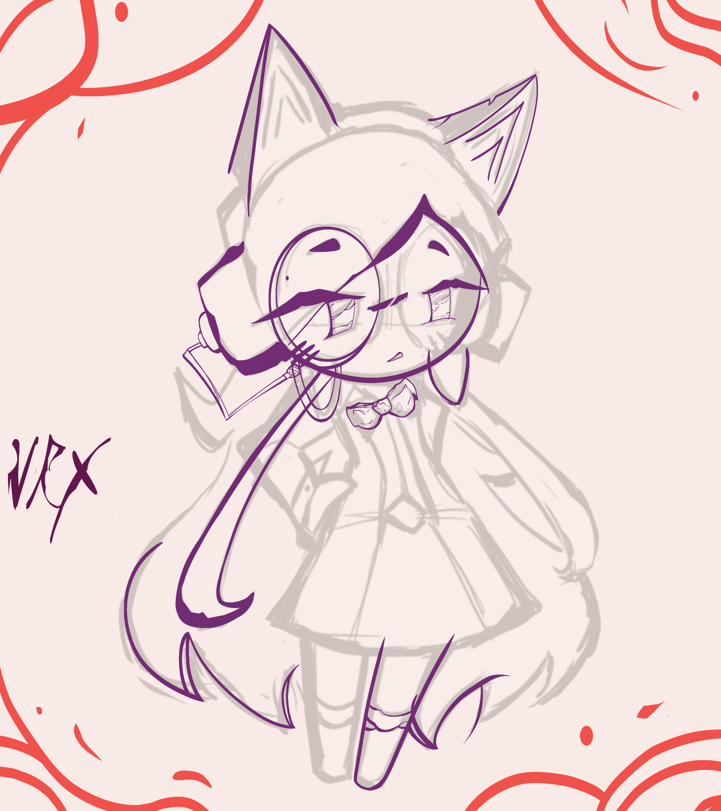

NRX // REVIVAL ARCHIVE
Peculir Colurs .C0lurs
Coralie regresa dentro de NRX. Esta seccion funciona como archivo de desarrollo: no hay songs confirmadas y el material mostrado pertenece al proceso actual.
PROJECTPeculir Colurs .C0lurs
SONGS CONFIRMADASNinguna
ESTADORevival / Desarrollo
LEAK // NEW SPRITE
Coralie
Primer vistazo al nuevo sprite de Coralie. Este material se presenta como leak del desarrollo actual de Peculir Colurs .C0lurs.
No hay songs confirmadas actualmente.

PAGE AUDIO // WIP
Peculiar Inst .C0lurs
Audio de trabajo para esta seccion. No representa una song confirmada.
Web version optimized from the WAV provided for the NRX wiki.
Thanks
Thanks @th0masr0s3s por darnos la oportunidad de revivir a Coralie y traerla a una nueva hera.